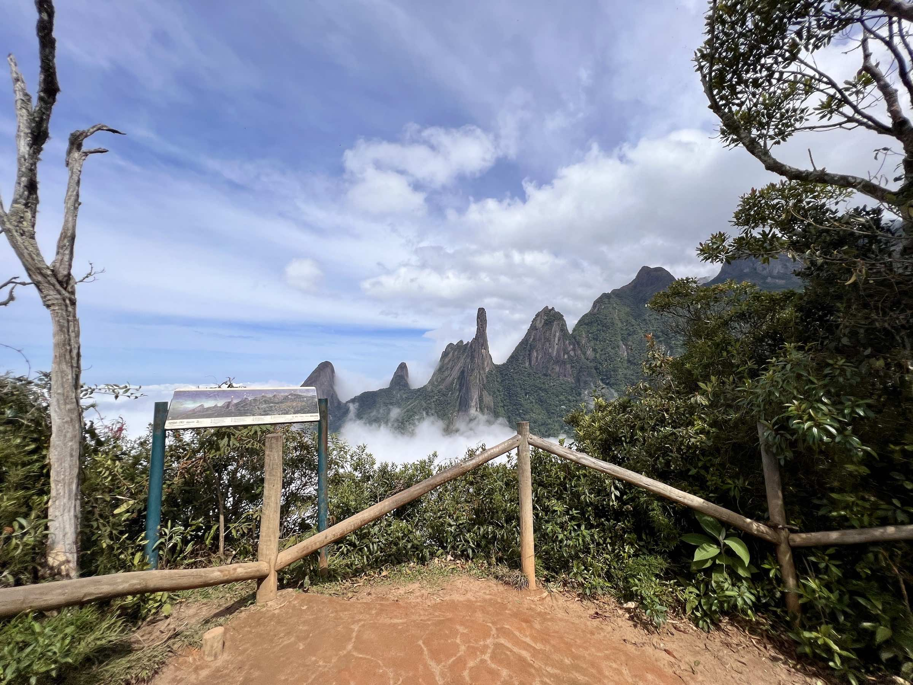
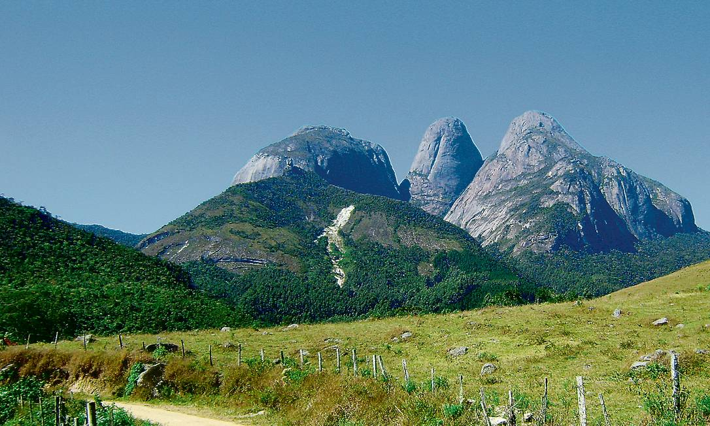

Nossos Parques

Parque Nacional Serra dos Orgãos
Um dos mais famosos do Brasil, com trilhas icônicas e paisagens impressionantes.
Ver detalhes

Parque Estadual dos Três Picos
Maior parque estadual do estado do Rio de Janeiro, ideal para montanhismo e contato profundo com a natureza.
Ver detalhes
Parque Natural das Montanhas de Teresópolis
5.335 hectares de Mata Atlântica preservada, trilhas, escalada e biodiversidade única.
Ver detalhes